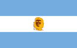
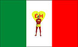
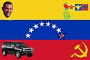
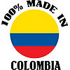
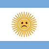

De: La Frikipedia, la enciclopedia extremadamente seria.
De: La Frikipedia, la enciclopedia extremadamente seria. De: La Frikipedia, la enciclopedia extremadamente seria.
Estos flamantes premios son los que te puedes llevar si trabajas muy duro para el Frikcionario
Premio Argentino de corazón
| Argentino de corazón Este usuario gana el premio Argentino de corazón por demostrar que ama tanto a la Argentina que hace crecer el Diccionario de Regionalismos Argentinos |
 |
Para ganarlo pon al menos 20 regionalismos argentinos en el Diccionario de regionalismos argentinos
Premio Palabrero Mexicano
| Palabrero Mexicano Este usuario gana el premio Palabrero Mexicano por hacer crecer el Diccionario de regionalismos mexicanos. |
 |
Para ganarlo pon al menos 20 regionalismos mexicanos en el Diccionario de regionalismos mexicanos
Premio Palabrista Venezolano
| Palabrista Venezolano Este usuario gana el premio Palabrista Venezolano por hacer crecer el Diccionario de regionalismos Venezolanos. |
 |
Para ganarlo pon al menos 20 regionalismos venezolanos en el Diccionario de regionalismos Venezolanos
Premio duro del lenguaje ñero
| Duro del lenguaje ñero Este usuario gana el premio Duro del lenguaje ñero por demostrar que quiere tanto a la patria que hace crecer el Diccionario chibchombiano. |
 |
Para ganarlo debes colaborar con 20 palabras en el Diccionario de regionalismos colombianos
|  | ¡Qué lo parió! Se le otorga el premio Roberto el Negro Fontanarrosa al usuario Frikcionario:Premios por haber logrado una amnistía para los argentinismos con sus 150 aportes al Diccionario de Regionalismos Argentinos. |
| Mexicano Cabronsote Este usuario gana el premio Mexicano Cabronsote por haber hecho mas de 150 aportaciones al Diccionario de Regionalismos Mexicanos |

|
Autor(es):